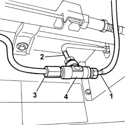

1042A47 3-WAY REAR FITTING OF CNG RECHARGE SYSTEM - R.R.
- Path
- Procedures > 10 ENGINE UNIT > 1042 METHANE GAS CANNISTER AND TUBES > 1042A METHANE GAS CANNISTER AND TUBES FOR RE-CHARGING > 1042A47 3-WAY REAR FITTING OF CNG RECHARGE SYSTEM - R.R.
- Kind
- repair procedure (removal / refitting; the operation number is the code)
- Applies to
- engines: 2.0 16V; all production periods
- Interactive page
- https://sloeber94.github.io/elrnDB-fDct/en/#/244002599
Applies to: engines: 2.0 16V; all production periods
 Removing
Removing
 Refitting
RefittingOp. 1042A02 C.N.G. - FUEL SYSTEM SAFETY CHECK
Position the vehicle on the lift.
Disconnect the battery.
1. Undo the connector and disconnect the front section of the pipe to the additional canisters.
2. Undo the connector and disconnect the pipe to the 3rd canister.
3. Undo the connector and disconnect the pipe to the 2nd canister.
4. Remove the rear three-way connector.

Applies to: engines: 2.0 16V; all production periods
Refitting
RemovingFit the rear three-way connector.
Tighten the connector and connect the pipe to the 2nd canister.
Tighten the connector and connect the pipe to the 3rd canister.
Tighten the connector and connect the front section of the pipe to the additional canisters.
Connect the battery.
Remove the vehicle from the lift.